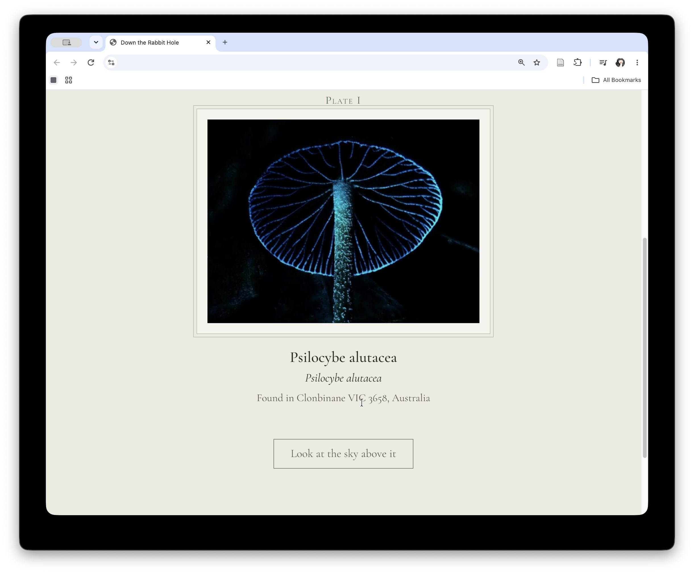

Documentation for The WWW as a Rube Goldberg Machine
Down the Rabbit Hole
A mushroom, the sky above it, a book, a museum, a song. Five web services, each found with one small fact from the one before.
Open the machineAbout
“Down the rabbit hole” is what happens when one small question leads to another, and another, until you end up somewhere you never meant to go.
This machine does that on purpose. It starts with a photograph of a mushroom and ends with a song. In between, five web services pass a single fact from hand to hand: a place, a percentage, a year, a few words. Each answer becomes the next question.
Nothing in the chain is useful. A cloud does not choose a book, and a book title has no reason to lead to a song. The point is the mechanism: the quiet, invisible relay of data between servers that usually happens behind every click.
The machine itself is styled like the plates of an old natural history atlas. Each step is a numbered plate, and the thin line between plates shows exactly what was carried down to the next one.
How the machine works
Each press of the button runs one step. Only one piece of data travels from each step to the next.
- Trigger: a press of the button
-
1
A mushroom
iNaturalist
Returns a random, expert-verified mushroom photo and where it was found.
- Passes its coordinates
-
2
The sky above it
Open-Meteo
Returns the cloud cover at that spot, right now.
- Passes 1900 + cloud cover = a year
-
3
A book
Open Library
Returns a random book first published in that year.
- Passes the book’s title
-
4
A museum object
The Met Collection API
Returns the first object with an image that matches the title.
- Passes the object’s title
-
5
A song
iTunes Search
Returns a matching song and plays a 30-second preview.
When a search finds nothing
Long titles often match nothing. When that happens, the machine tries again with only the longest word of the title. If the Met still has nothing, it searches for “cloud”. These fallbacks are part of the chain too, and they often produce the strangest results.
Responses to the brief
What kind of data could be passed around?
Deliberately small and dull data: a pair of coordinates, a percentage, a year, a title. None of it means anything to the next service. The machine treats a cloud cover of 73% as the year 1973, and a book title as a search term for a museum. The meaning is lost at every step, and that is where the surprise comes from.
Which services could be chained together?
Five free public services that have nothing to do with each other:
- iNaturalist, a citizen-science archive of nature observations
- Open-Meteo, live weather for any point on Earth
- Open Library, the Internet Archive’s catalogue of books
- The Met Collection API, The Metropolitan Museum of Art’s open-access collection
- iTunes Search, Apple’s music catalogue with 30-second previews
None of them needs an API key, so the whole machine runs as a single static page.
What would the triggers look like?
A single button. Each press moves the visitor one step further down, and the button names the next step: “Look at the sky above it”, “Find a book from that year”, “Take the title to the Met”, “Listen”. Splitting the chain into presses lets the visitor watch each handover instead of seeing only the result.
What would the end results be?
A song, and never the same one twice. The mushroom is random, the cloud cover changes by the hour, and the book is picked at random from that year. Two journeys from testing:
- Amanita mushrooms in Costa Rica → 73% cloud → 1973 → Cinderella in Mink by Roberta Leigh → Honoré Daumier’s The new Cinderella (1866)
- Winter Teacher in Iowa → 1% cloud → 1901 → The Bad Place by Dean Koontz → Thomas Rowlandson’s Bad Speculation (1799) → “AMERIKKKAN IDOL” by Joey Bada$$
Problems and Solutions
-
01
Currently, clicking “Start” causes all content to appear at once. This needs to be changed so that each click of the button triggers a new piece of content.
The music is not playing.
One click, one step const steps = [ { run: findMushroom, nextLabel: "Look at the sky above it" }, { run: lookAtClouds, nextLabel: "Find a book from that year" }, { run: findBook, nextLabel: "Take the title to the Met" }, { run: visitMet, nextLabel: "Listen" }, { run: playMusic, nextLabel: "Begin again" }, ] let currentStep = 0 const nextStep = () => { // after the last step, clear the page and begin again if (currentStep === steps.length) { platesArea.innerHTML = "" currentStep = 0 } const step = steps[currentStep] triggerButton.disabled = true step.run() .then(() => { currentStep++ // move on only if this step worked triggerButton.innerText = step.nextLabel }) .catch((err) => showStatus(err.message)) // stay here, so the next click retries .finally(() => triggerButton.disabled = false) } triggerButton.addEventListener("click", nextStep)Playing the music // iTunes blocks fetch() from pages opened straight from a computer, // so load the answer as a <script> instead (JSONP) const getJSONP = (url) => new Promise((resolve, reject) => { const callbackName = "itunesCallback" + Date.now() const script = document.createElement('script') window[callbackName] = (data) => { resolve(data) delete window[callbackName] script.remove() } script.onerror = () => reject(new Error("iTunes could not be reached")) script.src = url + "&callback=" + callbackName document.body.appendChild(script) }) // find a song with a preview, then play it getJSONP(iTunesURL + "?media=music&entity=song&limit=5&term=" + encodeURIComponent(term)) .then((data) => { const song = data.results.find((s) => s.previewUrl) const audio = document.createElement('audio') audio.src = song.previewUrl audio.controls = true musicSection.appendChild(audio) audio.play().catch(() => {}) // if the browser blocks autoplay, the visitor presses play }) -
02
That works.
-
03
Refine the design; the page should look elegant, classical, clean, and restrained—reminiscent of botanical illustrations from a natural history collection.
